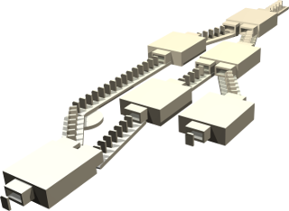

SciPipe

Project links: GitHub Repo | Issue Tracker | Mailing List
 SciPipe is a library for writing Scientific Workflows, sometimes also called "pipelines", in the Go programming language.
When you need to run many commandline programs that depend on each other in complex ways, SciPipe helps by making the process of running these programs flexible, robust and reproducible. SciPipe also lets you restart an interrupted run without over-writing already produced output and produces an audit report of what was run, among many other things.
SciPipe is built on the proven principles of Flow-Based Programming (FBP) to achieve maximum flexibility, productivity and agility when designing workflows. Similar to other FBP systems, SciPipe workflows can be likened to a network of assembly lines in a factory, where items (files) are flowing through a network of conveyor belts, stopping at different independently running stations (processes) for processing, as depicted in the picture above.
SciPipe was initially created for problems in bioinformatics and cheminformatics, but works equally well for any problem involving pipelines of commandline applications.
Benefits
Some key benefits of SciPipe, that are not always found in similar systems:
- Intuitive behaviour: SciPipe operates by flowing data (files) through a network of channels and processes, not unlike the conveyor belts and stations in a factory.
- Flexible: Processes that wrap command-line programs or scripts, can be combined with processes coded directly in Golang.
- Custom file naming: SciPipe gives you full control over how files are named, making it easy to find your way among the output files of your workflow.
- Portable: Workflows can be distributed either as Go code to be run with
go run, or as stand-alone executable files that run on almost any UNIX-like operating system. - Easy to debug: As everything in SciPipe is just Go code, you can use some
of the available debugging tools, or just
println()statements, to debug your workflow. - Supports streaming: Can stream outputs via UNIX FIFO files, to avoid temporary storage.
- Efficient and Parallel: Workflows are compiled into statically compiled code that runs fast. SciPipe also leverages pipeline parallelism between processes as well as task parallelism when there are multiple inputs to a process, making efficient use of multiple CPU cores.
Known limitations
- There are still a number of missing good-to-have features for workflow design. See the issue tracker for details.
- There is not (yet) support for the Common Workflow Language.
Hello World example
Let's look at an example workflow to get a feel for what writing workflows in SciPipe looks like:
package main import ( // Import SciPipe, aliased to 'sp' for brevity sp "github.com/scipipe/scipipe" ) func main() { // Initialize processes from shell command patterns helloWriter := sp.NewFromShell("helloWriter", "echo 'Hello ' > {o:hellofile}") worldAppender := sp.NewFromShell("worldAppender", "echo $(cat {i:infile}) World >> {o:worldfile}") // Create a sink, that will just receive the final outputs sink := sp.NewSink() // Configure output file path formatters for the processes created above helloWriter.SetPathStatic("hellofile", "hello.txt") worldAppender.SetPathReplace("infile", "worldfile", ".txt", "_world.txt") // Connect network worldAppender.In["infile"].Connect(helloWriter.Out["hellofile"]) sink.Connect(worldAppender.Out["worldfile"]) // Create a pipeline runner, add processes, and run pipeline := sp.NewPipelineRunner() pipeline.AddProcesses(helloWriter, worldAppender, sink) pipeline.Run() }
Running the example
Let's put the code in a file named scipipe_helloworld.go and run it:
$ go run scipipe_helloworld.go AUDIT 2017/05/04 17:05:15 Task:helloWriter Executing command: echo 'Hello ' > hello.txt.tmp AUDIT 2017/05/04 17:05:15 Task:worldAppender Executing command: echo $(cat hello.txt) World >> hello_world.txt.tmp
Let's check what file SciPipe has generated:
$ ls -1tr hello* hello.txt.audit.json hello.txt hello_world.txt hello_world.txt.audit.json
As you can see, it has created a file hello.txt, and hello_world.txt, and
an accompanying .audit.json for both of these files.
Now, let's check the output of the final resulting file:
$ cat hello_world.txt Hello World
Now we can rejoice that it contains the text "Hello World", exactly as a proper Hello World example should :)
You can find many more examples in the examples folder in the GitHub repo.
For more information about how to write workflows using SciPipe, use the menu to the left, to browse the various topics!